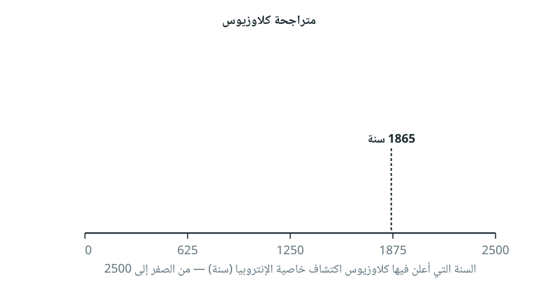

متراجحة كلاوزيوس
Clausius Inequality
التكامل الدوري للحرارة العكوسة مقسومة على درجة الحرارة لا يزيد على الصفر. أساس إثبات أن الإنتروبيا خاصية.
متراجحة كلاوزيوس صياغة رياضية للقانون الثاني: dS ≥ dq/T، حيث dq الحرارة المتبادلة عند درجة الحرارة T. يعرضها Atkins بهذه الصورة في قائمة معادلات الموضوع 3A، ويستخدمها مدخلاً لتعريف الإنتروبيا. ويشتق Çengel منها أن التكامل الدوري لكمية ما إذا كان صفراً فإن تلك الكمية تعتمد على الحالة فقط لا على مسار العملية، فتكون خاصية؛ ومن هنا استنتج كلاوزيوس 1865 خاصية الإنتروبيا. والعلاقة تصير مساواة في العملية العكوسة تماماً، ومتراجحة في العملية الحقيقية غير العكوسة.
كيف تعمل الظاهرة؟
متراجحة كلاوزيوس صياغة رياضية للقانون الثاني: dS ≥ dq/T، حيث dq الحرارة المتبادلة عند درجة الحرارة T. يعرضها Atkins بهذه الصورة في قائمة معادلات الموضوع 3A، ويستخدمها مدخلاً لتعريف الإنتروبيا. ويشتق Çengel منها أن التكامل الدوري لكمية ما إذا كان صفراً فإن تلك الكمية تعتمد على الحالة فقط لا على مسار العملية، فتكون خاصية.
العلاقة بالأرقام
dS ≥ dq/T، والمساواة في العملية العكوسة تماماً. وبصيغة التكامل الدوري ∮(dq/T) ≤ 0. ومن هنا استنتج كلاوزيوس 1865 خاصية الإنتروبيا. وفي عملية عكوسة بين حالتين: ∫dq_rev/T يساوي تغيّر الإنتروبيا بالضبط؛ وفي عملية حقيقية بالحالتين نفسيهما يكون التكامل أقل من تغيّر الإنتروبيا.
مفاهيم متقاربة
متراجحة كلاوزيوس تختلف عن مبدأ تزايد الإنتروبيا: الأولى علاقة بين تغيّر إنتروبيا النظام والحرارة المتبادلة، والثاني علاقة بين إنتروبيا النظام والمحيط وتوليد الإنتروبيا. وتختلف عن صياغة كلاوزيوس اللفظية للقانون الثاني التي تتحدث عن استحالة نقل الحرارة من بارد إلى ساخن بلا شغل. ولا تُقرأ كمساواة في العمليات الحقيقية، فذلك يلغي اللاعكوسية.
حدود التطبيق
المتراجحة تفترض أن الحرارة تُتبادل عند درجة حرارة محددة للنظام، فلا تُطبَّق مباشرة على عملية تُبادَل فيها الحرارة عند درجات مختلفة بلا تقسيم إلى خطوات. ولا تُستخدم كمساواة إلا في العملية العكوسة تماماً، وهي حدّ نظري لا يتحقق في عملية حقيقية. ولا تُستنتج منها قيم مطلقة للإنتروبيا بل تغيّراتها.

| الكمية | القيمة | المصدر |
|---|---|---|
| السنة التي أعلن فيها كلاوزيوس اكتشاف خاصية الإنتروبيا | 1865 سنة | [2] |
المصادر
- 1 Atkins' Physical Chemistry, 11th ed. — Oxford University Press (2018). · اطُّلع عليه 2026-11-21
- 2 Thermodynamics: An Engineering Approach, 8th ed. — McGraw-Hill (2015). openlibrary.org/api/books?bibkeys=ISBN:9780073398174&format=json&jscmd=data · اطُّلع عليه 2026-11-21
استشهد بهذا المصطلح
الصيغتان مبنيتان من بيانات الصفحة نفسها: العنوان والتاريخ ورابط النسخة المنشورة.
متراجحة كلاوزيوس — Clausius Inequality. (2026). ديوان المعرفة — انفراد. https://infiradev.com/diwan/terms/term-clausius-inequality.html
@misc{term-clausius-inequality2026,
title = {متراجحة كلاوزيوس},
titleaddon = {Clausius Inequality},
howpublished = {{ديوان المعرفة — انفراد} — مرجع علمي عربي},
year = {2026},
url = {https://infiradev.com/diwan/terms/term-clausius-inequality.html},
urldate = {2026-11-25},
note = {مراجعة علمية: فحص التسليم — مراجعة المدير}
}
راجعه: فحص التسليم — مراجعة المدير · 2026-11-25 · آخر تحديث 2026-11-21